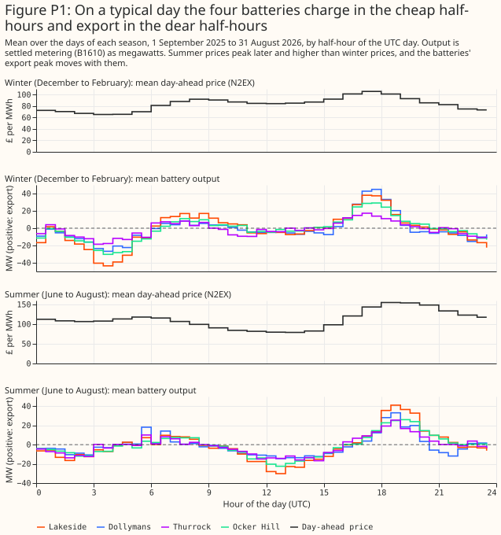
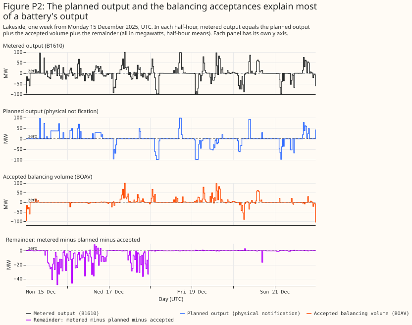
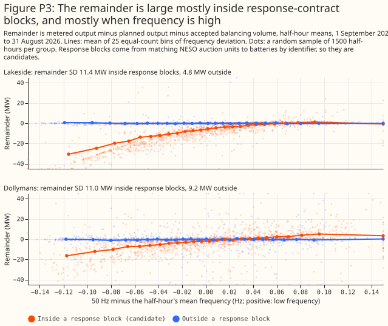
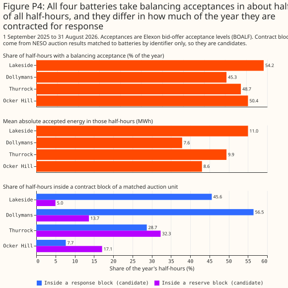
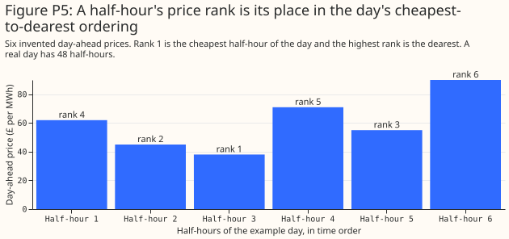

How GB batteries schedule themselves
This page explains how the operator of a battery in Great Britain (GB) decides when to charge and discharge, which of those decisions are visible in public data, and which must be inferred. The data come from a year of four public batteries, from 1 September 2025 to 31 August 2026. The page is background for the battery and solar separation study. The prices a battery reacts to are described on GB electricity prices: which are free and when each is known.
Besides wholesale trading, a battery deals in three markets: frequency response, the Balancing Mechanism (BM), and imbalance settlement. Frequency response is a contract in which a battery changes its output within seconds to hold the grid frequency near 50 Hz. The Balancing Mechanism (BM) is the market in which the National Energy System Operator (NESO) buys changes in output close to delivery, by accepting a generator's offer to produce more or a battery's bid to take energy in. Imbalance is the difference between what a party traded and what its meter recorded, settled at the system price.
A GB battery earns most of its revenue from wholesale arbitrage and from frequency response. Wholesale arbitrage means buying energy when it is cheap and selling it when it is dear. In the Modo Energy index for 2-hour batteries, August 2026 paid £56,000 per MW per year in total: wholesale £44,000, frequency response £16,000, BM −£17,000, imbalance £4,000, reserve £3,000, and Capacity Market £6,000. September 2026 paid £99,000: wholesale £68,000, frequency response £28,000, BM −£8,000, imbalance £2,000, reserve £3,000, and Capacity Market £6,000. The BM line is negative because accepted bids cost the battery money. The July 2026 Modo Energy article says that batteries "spent more than ever before buying energy through the Balancing Mechanism" (Modo Energy, July 2026). The July breakdown is behind a subscription. That the battery recovers the cost by selling the energy later in the wholesale market is our reading, not a statement in the article. Cornwall Insight describes the shift from response to wholesale.
On a typical day the four batteries charge in the cheap half-hours and export in the dear half-hours. The four are Lakeside (T_LKSDB-1), Dollymans (E_DOLLB-1), Thurrock (T_THURB-1), and Ocker Hill (T_OCHLB-1), all public Balancing Mechanism Units (BMUs), shown for 1 September 2025 to 31 August 2026 in Coordinated Universal Time (UTC). Summer prices peak later and higher than winter prices, and the export peak moves with them.

The planned output and the accepted balancing volumes explain most of a battery's output. Metered output equals the planned output (the physical notification), plus the volume of balancing acceptances, plus a remainder. Figure P2 shows one week of the decomposition for one battery. Over the year, the planned output alone explains 29.2% to 36.3% of the variance of output across the four batteries, and the planned output plus the accepted volumes explains 81.4% to 97.2% (battery and solar separation study). Wholesale trading shows in the planned output, and frequency response shows in the remainder.

The remainder is large inside frequency-response contract blocks, and mostly when frequency is high. A contract block is a delivery period in which a battery holds a frequency-response contract. Lakeside's remainder has a standard deviation of 11.4 MW inside blocks and 4.8 MW outside. In half-hours with frequency at least 0.08 Hz above 50, inside a block, Lakeside's mean remainder is −26.9 MW. Negative output is import (charging). The contract blocks come from matching NESO auction units to batteries by identifier only, so every block here is a candidate.

All four batteries take balancing acceptances in about half of all half-hours. The share is 45.3% to 54.2%. The batteries differ in how much of the year they sit inside a candidate response block (7.7% to 56.5%) and a candidate reserve block (5.0% to 32.3%).

Four scheduling algorithms
Four algorithms summarise what the operator and analyst sources we read say battery optimisers do. No published study of GB batteries that we found fits a dispatch model to metered battery output. Of the papers we found, Bian et al. give the closest method, inverse optimisation (inferring an optimiser's objective from what it did). The four algorithms below are our plain-language summary of operator and analyst descriptions, and the battery and solar separation study uses only the first.
- Day-ahead arbitrage. Take tomorrow's 48 day-ahead prices. Start from the expected state of charge at midnight. Choose a charge or discharge power for each half-hour to maximise revenue from discharging, minus the cost of charging and a wear charge per MWh. Keep the state of charge between about 5% and 95% (source not checked), keep the power inside the import and export limits, apply a round-trip efficiency of about 0.85 to 0.90 (source not checked), and cap the cycles per day (a cycle is one full charge and discharge). Submit the result as the day-ahead position, which appears in the physical notification. A one-cycle shortcut charges in the cheapest block as long as the battery's duration and discharges in the dearest block after it, and idles if the price spread is smaller than the losses plus the wear. 2. Frequency-response holdback. One day before, offer megawatts into the Dynamic Containment, Moderation, or Regulation auctions when the expected response price beats the value of arbitrage, then run algorithm 1 on the power that remains. Inputs: response auction prices and the contracted megawatts. 3. Within-day re-optimiser. After each intraday auction, or every half-hour, solve algorithm 1 again over the remaining half-hours from the current state of charge. Inputs: the committed positions and the latest intraday prices. 4. BM acceptance rule. Set offer and bid prices around the expected later sale price, adjusted for efficiency and a margin, and let the system operator accept or skip each offer and bid (ESS News reports a skip-rate measure that fell from 49% in the first half of 2025 to 38% in the first half of 2026). Inputs: expected prices and the state of charge.
GB batteries cycle less than a perfect-foresight optimiser would, which is about 0.6 to 1.0 cycles a day against 2.4. Modo's analysis of 2026 operations finds 1-hour batteries at about 0.6 cycles a day and 2-hour batteries at 0.9 to 1.0 (Modo Energy). A perfect-foresight optimiser on 2023 to 2024 prices cycles about 2.4 times a day (rudy-smith/gb-bess-dispatch). A perfect-foresight optimiser knows every future price. The one study we found showing that optimisers sharing a method behave alike is Australian (arXiv 2607.13002), and we found no GB evidence of it.
Price rank
A half-hour's price rank is its place in that day's ordering of the 48 half-hourly day-ahead prices from cheapest to dearest, from 1 for the cheapest to 48 for the dearest. Take the six half-hours of a short example day, with invented day-ahead prices of £62, £45, £38, £71, £55, and £90 per MWh. Sorted from cheapest to dearest the prices are £38, £45, £55, £62, £71, and £90, so the half-hour priced at £38 has rank 1, the half-hour at £45 has rank 2, and the half-hour at £90 has the highest rank, 6. A real day has 48 half-hours, and the ranks run from 1 to 48.

The rank is used instead of the price level because a battery charges in the cheapest half-hours and discharges in the dearest whatever the absolute price. The day-ahead price level changes from day to day with gas prices and wind, so the same battery behaviour appears at £30 per MWh on one day and £120 per MWh on another. The rank removes that day-to-day level and keeps the shape of the day, which is what a battery's schedule follows.
How many batteries are connected in NGED's area?
NGED's Embedded Capacity Register (ECR) lists 176 connected storage rows of 50 kW or more, and the
public registers match none of them to a Balancing Mechanism Unit (BMU) by name and capacity.
A BMU is the unit in which output is notified, metered, and settled with the system operator.
Each BMU submits a Final Physical Notification (FPN), its planned output. The counts below come from
studies/embedded_battery_forecast/census_report.py, which recounts the registers. The registers
are dated: the ECR is the August 2026 release, the Renewable Energy Planning Database (REPD) is the
July 2026 release, and the National Energy System Operator's (NESO's) transmission entry capacity
(TEC) register is the October 2026 release. A battery connected after those dates is missing.
The count is 210 embedded batteries, most of them small. The ECR lists 176 connected storage rows. The REPD adds 34 operational batteries that lie more than 1 km from every connected ECR storage row, so they are not already counted. Each is placed in the licence area of a connected ECR row of any technology within 5 km. Several sites converted from backup generation are still listed in the ECR as gas or oil. Domestic batteries are not counted, because the ECR starts at 50 kW.
| Licence area | Connected storage rows in the ECR | Added from the REPD | Total |
|---|---|---|---|
| East Midlands | 58 | 9 | 67 |
| West Midlands | 45 | 14 | 59 |
| South Wales | 31 | 3 | 34 |
| South West | 42 | 8 | 50 |
| Total | 176 | 34 | 210 |
| Export size of an ECR storage row | Rows |
|---|---|
| Under 1 MW | 141 |
| 1 to 10 MW | 14 |
| 10 to 50 MW | 20 |
| 50 to 100 MW | 1 |
The ECR alone cannot say which batteries have a BMU, and name and capacity together matched none. The ECR lists every generator and store connected to NGED's distribution network, but it carries no BMU identifier. The census compared each of the 8 embedded storage BMUs in NGED's four grid supply point groups with the ECR rows. No BMU had a row that agreed on both name and capacity (a string-similarity ratio of at least 0.85 between the names, and a capacity within 10%), so the match found none of the 8.
The BMU register gives a ratio from the other side: 8 embedded storage BMUs against the ECR's 176 storage rows, 4.5% by count and 47% by megawatts. The BMU register holds 8 embedded storage BMUs in NGED's four grid supply point groups (the groups of substations where the transmission network meets NGED's distribution network). Of those, 5 have at least 95% of the year's settled output in Elexon's B1610 data, a ratio of 2.8% by count. The share by megawatts divides the 8 BMUs' generation capacity by the 699 MW of connected storage export capacity. Each BMU may stand for more than one ECR row, or for none, so the 4.5% and the 47% are ratios of two registers, not counts of matched batteries.
About 55 transmission-connected batteries are in the TEC register, and 11 sit at a connection site whose first word matches one of the ECR's grid supply point names. That match is loose. The 55 transmission-connected batteries sit outside the 210, because NGED's distribution network does not carry their output.
Of the 176 storage rows, 141 are under 1 MW and almost certainly have no BMU of their own. The census cannot say whether the 35 rows of 1 MW or more sit inside a supplier's BMU or have no BMU at all.
For forecasting, most embedded batteries have no planned output, so a forecast for them cannot use it. A forecast that takes the FPN as an input applies to a small share of the embedded batteries: about 4.5% of the storage rows by count, on the ratio of the two registers. The battery and solar separation study does not need the FPN for its separation, and uses it only in the primer's decomposition of the output. The public BMU batteries are therefore a small testbed, and a forecast for the other batteries has to work from metered flows and prices alone.
What the public data show and what must be inferred
| Quantity | Observed in public data | Must be inferred |
|---|---|---|
| Day-ahead and system prices | Yes (NESO, Elexon) | No |
| Planned output (physical notification) | Yes, the final version only (Elexon) | The versions before the final one |
| Output limits | Yes (Elexon) | No |
| Accepted balancing volumes and submitted prices | Yes (Elexon) | Which offers or bids the system operator skipped |
| Auction results for response and reserve | Yes, by auction unit (NESO) | Which BMU holds the contract, when the unit-to-BMU mapping is not exact |
| Grid frequency | Yes (Elexon) | No |
| Metered output | Yes (Elexon's B1610 report of settled output, half-hourly) | No |
| Energy capacity | No | Yes |
| Round-trip efficiency | No | Yes |
| Wear charge and cycle cap | No | Yes |
| State of charge | No | Yes, by integrating metered output |
| Expected system price used for imbalance decisions | No | Yes |
Historical analysis and forecasting need different inputs. Which of these quantities is known after the event, the day before, and an hour before is tabulated in the study's section Historical separation versus forecasting a battery.
Physical notifications: submission times and public sources
A physical notification (PN) is a BMU's planned output, and each resubmission is a new version that replaces the last. A PN is a series of MW levels over time that the BMU submits to NESO. For one half-hour that starts at time T, the versions follow this timeline:
- 11:00 on the day before: NESO requires a PN for every half-hour of the next day (BC1.4.2). A BMU that submits none gets a defaulted PN (BC1.4.5).
- Between 11:00 and gate closure: the BMU revises the PN whenever its expected output changes (BC1.4.2 and BC1.4.3).
- T minus 1 hour, at gate closure: the PN in force at that moment becomes the Final Physical Notification (FPN), which does not change afterwards (BC1.4.4).
- T to T plus 30 minutes: NESO may change the BMU's output by accepting its bids or offers, and these are measured against the FPN.
Clause BC1.4.2 covers three groups of BMU. The groups are BMUs with 50 MW or more of demand capacity in England and Wales (10 MW and 30 MW in the two Scottish areas), BMUs at large or medium power stations (and transmission-connected small ones), and BMUs whose participant chooses to submit bid-offer data. The clause also covers each Generating Unit that clause BC1.2 brings in. This wording is from Grid Code BC1, Issue 6 Revision 22, dated 2 April 2024, and later revisions were not checked.
Elexon publishes only the final version, from about a minute after gate closure. In tests on 2026-10-08 and 2026-10-09, the Elexon Insights API returned PN rows for a half-hour from about 1 minute after its gate closure, and returned no rows for the next day. A row holds the settlement date and period, the start and end of the interval, the MW level at each end, and the BMU's NESO identifier and its Elexon identifier. A row has no publish time and no revision number, and the PN endpoint accepts only the settlement date and period, an optional BMU, and an output format. One half-hour (settlement period 20 on 2026-09-01) returned 2,679 rows, which is 580 KB of JSON. Elexon's glossary says that initial PNs, which BMUs submit at the day-ahead stage, "are not displayed on the Insights Solution or used in Settlement calculations".
The Insights Real-time Information Service (IRIS) is documented as carrying the same data as the
API. The iris-clients README says that IRIS and
the APIs "make available the same data, in the same output format". Whether an IRIS message carries
a publish time or a revision has not been checked, and IRIS sign-up needs an account in Elexon's
identity tenant.
Apart from the Generating Units that clause BC1.2 brings in, a unit that is not a BMU submits no PN under BC1.4.2. The one NESO dataset we found that holds non-BM PNs is the Non-BM Physical Notifications dataset. It covers only units whose providers declare to NESO's Open Balancing Platform. On 2026-10-09 the dataset held about 498,000 rows. Each row has a unit ID, a start time and level, and an end time and level. The dataset has no owner or location column, so no column links a unit to an NGED substation. A non-BM embedded generator whose provider does not declare to that platform has no PN in either source we found.
A free sum of the day-ahead PNs exists, but it is unlikely to help a substation forecast.
Elexon's INDGEN dataset gives, for each
half-hour, the sum of the PNs of every BMU that plans to export energy. The INDDEM dataset gives the
same sum for BMUs that plan to import. Each row is an average MW for one settlement period, with a
publish time. On 2026-10-08, NESO reissued INDGEN every 30 minutes (47 issues that day), and each
issue covered about 82 half-hours, which reaches the end of the next day. Every issue holds a
national total (boundary N) and 17 further series labelled B1 to B17. At 12:00 UTC on 2026-10-08,
the 17 boundary values summed to far more than the national value, so the boundaries overlap and do
not divide Great Britain into parts. The datasets hold no value for a single BMU, so they say little
about the net load at one primary substation.
Each boundary is a sum of non-overlapping study zones, and no source we found maps the zones to
NGED's licence areas. Elexon CVA Change Circular 235 (2012), Appendix
1 defines the
boundaries. Each of B1 to B17 is a transmission constraint boundary from the National Electricity
Transmission System Seven Year Statement, and each is a sum of one or more of 17 non-overlapping
study zones, Z1 to Z17. The circular gives one formula for each zone, for example Z12 =
N-B9-B12-B14-B15. A check on 2026-10-08 of all 2,768 pairs of issue and half-hour found no zone
negative in INDGEN and none positive in INDDEM, so the circular's formulas still give physically
sensible zone values in current data. The circular refers to a map of the study zones and boundaries
(its Attachment 11, which is not in the PDF). A map also appears as Fig. 1 of a 2009 IEEE PowerTech
paper, reproduced from the 2008 Seven Year
Statement. We found no machine-readable version of the zone boundaries. The zones follow
transmission constraint boundaries, and no source we found maps the boundaries or zones to NGED's
licence areas or supply points.
The sums include embedded BMUs, but INDGEN is mostly large transmission-connected plants and
INDDEM is mostly supplier demand. Embedded BMUs here are the BMUs with IDs starting E_. For
settlement period 25 of 2026-10-08, which starts at 11:00 UTC, the final PNs of all BMUs, averaged
over the half-hour for each BMU, summed to 26,653 MW for export and −18,712 MW for import, of which
embedded BMUs contributed 692 MW and −448 MW. The INDGEN value from the 10:48 UTC issue was 26,575
MW, within 0.3% of the PN sum, whereas the sum without embedded BMUs would be 25,961 MW. The INDDEM
value was −18,713 MW, 1 MW from the PN sum. In the same half-hour, supplier base BMUs (IDs starting
2__) made up 14,948 MW of the −18,712 MW of imports, which is 80%. A supplier base BMU aggregates
the demand of a supplier's customers in one grid supply point group, so INDDEM says little about the
net load at one primary substation.
Both sources may be re-used with attribution. The Elexon "Licence to use BMRS open data" allows copying, publishing, adapting, and commercial use, on condition that the copy carries "Contains BMRS data © Elexon Limited copyright and database right [year]". That licence applies to users who are not BSC Parties, and it has not been confirmed to cover Insights and IRIS data. NESO's data carries the NESO Open Data Licence, which is based on the Open Government Licence v3.